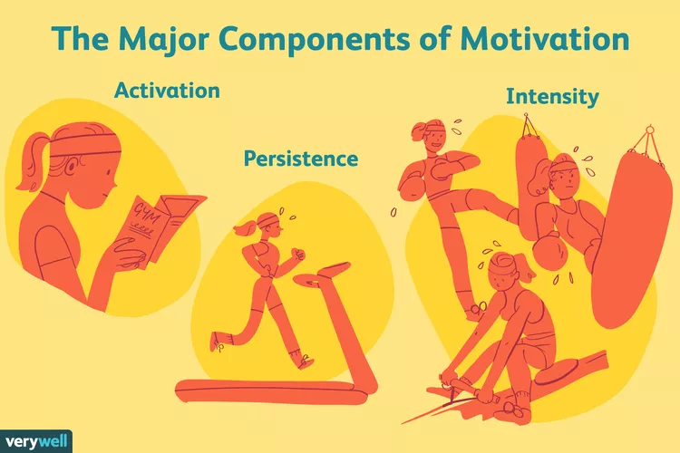

The term "motivation" describes why a person does something. It is the driving force behind human actions. Motivation is the process that initiates, guides,
and maintains goal-oriented behaviors.
For instance, motivation is what helps you lose extra weight, or pushes you to get that promotion at work. In short, motivation causes you to act in a way that gets you closer to your goals. Motivation includes the biological, emotional, social, and cognitive
forces that activate human behavior.
Why Motivation Is Important
Motivation serves as a guiding force for all human behavior. So, understanding how motivation works and the factors that may impact it
can be important for several reasons.
Understanding motivation can:
- Increase your efficiency as you work toward your goals
- Drive you to take action
- Encourage you to engage in health-oriented behaviors
- Help you avoid unhealthy or maladaptive behaviors, such as risk-taking and addiction
- Help you feel more in control of your life
- Improve your overall well-being and happiness
On May 19, 2022, Verywell Mind hosted a virtual Mental Health in the Workplace webinar, hosted by Editor-in-Chief Amy Morin, LCSW. If you missed it, check out this recap to learn ways to foster supportive work environments and helpful strategies to improve your well-being on the job.